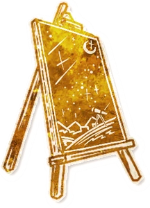

Script Builder
Build a script from wiki characters, then export, share or publish it.
Token Tool (beta)
Print character and reminder token sheets for wiki characters.

Grimoire Forge
Check your ability text against official card wording.
Icon Forge
Turn line art, a scan or a photo into an official-style character icon.

Starlit Gallery
Ready-made character icons in any texture, to download or put on your character.
Mass Import
Import a whole script from a JSON file or a Bloodstar link.
Jinxes
Every jinx on the wiki, as a list and a map.
Creator Marks
Every creator's mark and who it belongs to. Claim one of your own.
Also Useful
Add one character in the character editor, or a whole script with Mass Import. Steven Approved Order lists the order the Script Builder sorts by.
Fan-made tools. Not affiliated with The Pandemonium Institute.